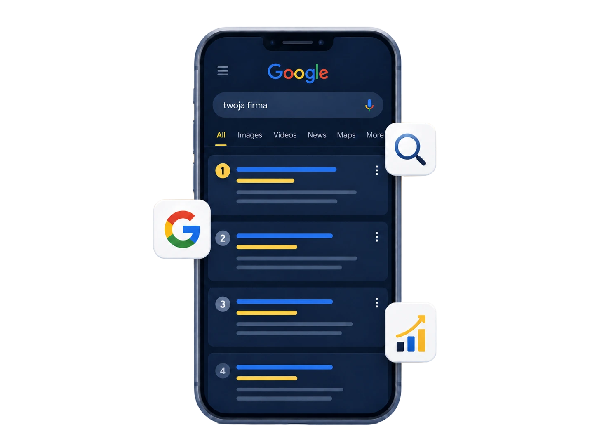
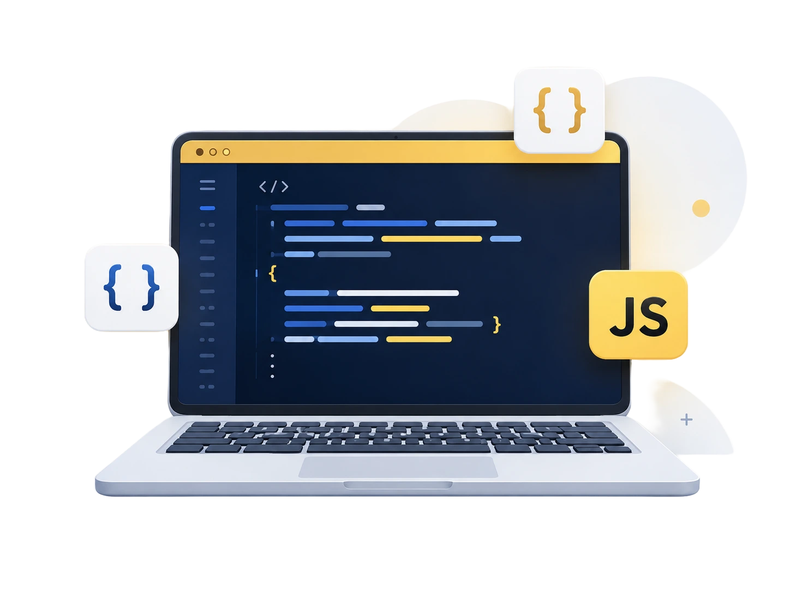

★★★★★
Strona przerosła moje oczekiwania. Wygląda profesjonalnie, a telefon dzwoni częściej niż wcześniej. Współpraca szybka i bez zbędnych formalności.
03 stycznia 2026
Tworzę nowoczesne strony internetowe dla lokalnych firm — od projektu i designu, przez widoczność w Google, po wsparcie po wdrożeniu.
Od projektu po wdrożenie — kompleksowa obsługa w jednym miejscu. Sześć usług, które razem tworzą skuteczną stronę dla Twojej firmy.
Podstawowa optymalizacja pod Google już na etapie budowy strony. Dbam o poprawną strukturę nagłówków, szybkie działanie, responsywność i treści, które pomagają stronie lepiej pracować w wynikach wyszukiwania.

Projektuję strony, które dobrze wyglądają, są czytelne na każdym urządzeniu i pomagają klientom szybciej podjąć decyzję o kontakcie — od prostej wizytówki po rozbudowaną ofertę usług.

Projekt dopasowany do marki, a nie gotowy szablon „jak każdy". Moje projekty to nowoczesny UX i design, dzięki któremu wyróżnisz się na tle konkurencji i zdobędziesz nowych klientów.

Tworzę strony, które wyglądają dobrze na telefonie, tablecie i komputerze — bez wyjątków i bez kompromisów. Najważniejsze informacje są zawsze łatwo dostępne na małym ekranie.
Masz już stronę, ale nie masz czasu, żeby się nią zająć? Pomogę Ci w aktualizacjach, poprawkach i rozwoju istniejących stron — abyś mógł skupić się na prowadzeniu firmy, a strona rozwijała się razem z nią.
Podpinam Google Analytics do mierzenia ruchu na stronie — dzięki temu będziesz wiedział, ile osób odwiedza stronę, skąd przychodzą i czy wykonują ważne działania, np. kliknięcie numeru telefonu lub wysłanie zapytania.
Projekty, które pokazują mój styl pracy — od salonu po serwis samochodowy.
Strona przerosła moje oczekiwania. Wygląda profesjonalnie, a telefon dzwoni częściej niż wcześniej. Współpraca szybka i bez zbędnych formalności.
Wreszcie klienci znajdują mnie w Google. Paweł wszystko wytłumaczył po ludzku, bez technicznego żargonu. Polecam każdej lokalnej firmie.
Nowa strona zrobiła ogromną różnicę w tym, jak postrzega nas klient. Terminowo, konkretnie i z pełnym wsparciem po uruchomieniu.
Prosty proces, jasna wycena i strona gotowa w dwa tygodnie. Dostałem dokładnie to, czego potrzebowała moja firma — nic więcej, nic mniej.